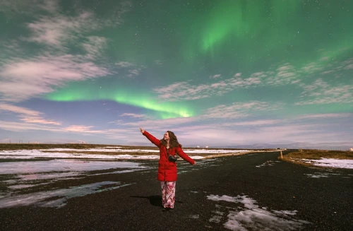
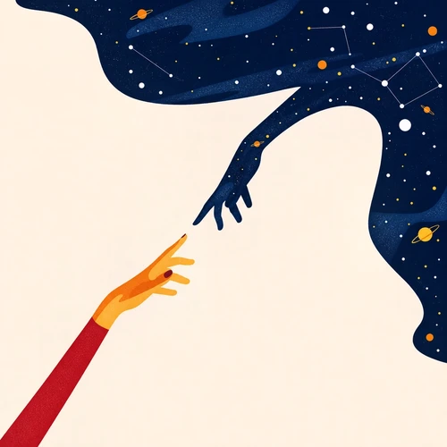
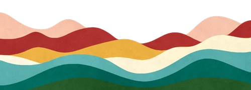

İçeriğe geç
Hakkında
Çalışma Alanları
Süreç
Basında
İletişim
Ana Sayfa
Hakkında
Çalışma Alanları
Süreç
Basında
İletişim
Basında

Milliyet · PembeNar
Akran Zorbalığından Psikolojiye Uzanan Bir Yolculuk
SonDakika.com
Zorluklar Karşısında Eğitim ve Dayanıklılık

Haberler.com
Gözen Durmuş’un Mesleki Yolculuğu
Röportaj Kesitini İzleyin
